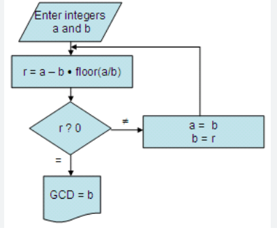

Greatest Common Denominator Algorithm
High-Level Overview
The Greatest Common Denominator (GCD), also known as the Greatest Common Divisor, is most commonly calculated using the Euclidean algorithm due to its efficiency.
- To find the GCD of two numbers using this method, start by identifying which of the two numbers is larger. Let a be the larger number and b be the smaller number; if b is larger, simply swap them.
- Proceed by dividing a by b, noting down the remainder r. The essence of the algorithm is in the iterative process: replace a with b and b with r.
- Continue this sequence—dividing the new a by the new b and updating accordingly—until the remainder r becomes 0. The algorithm stops when a division yields no remainder, and at this point, b is the GCD of the original pair of numbers.